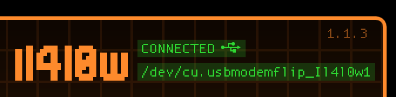

Adrien Lasalle
Tuesday, September 20, 2022
USB to tty
The following command have been performed on my MacBook, but the commands are the same on linux.
#MacOS
brew install tio
#Linux
apt install tio
Once installed, you may locate the tty device of your flipper.
If you have issue finding it, just check the path on the qflipper app
In the screenshot, you can see the cu device, we are looking for the tty interface, it should be in the same path and have the name of your flipper.
use the following command to get a shell on your flipper zero
sudo tio /dev/tty.usbmodemflip_Il4l0w1
Troubleshooting : Sometimes the tty wont work. Try to interact with the other interface , the
cu one and then try again the tty.